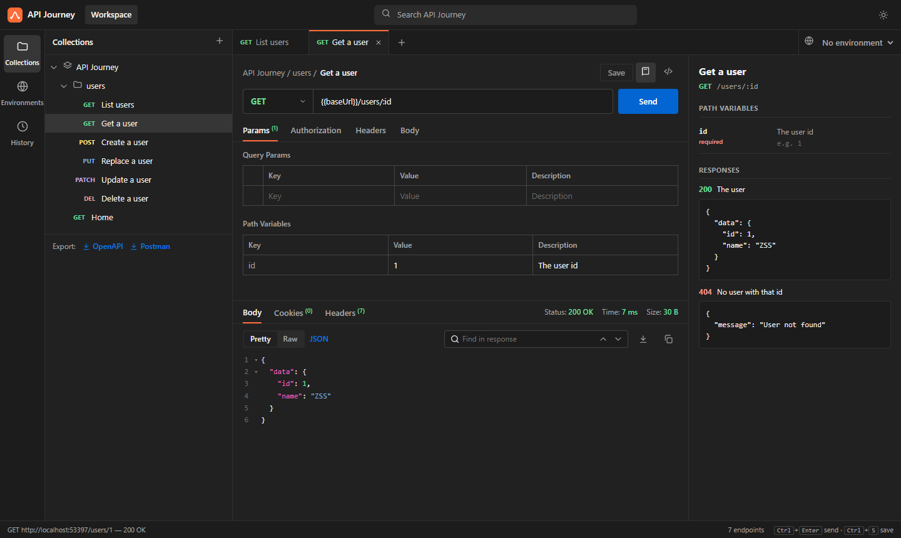

Automatic route discovery
Every method and path, at any nesting depth. Routes it can't place are reported in the sidebar — never shown with a wrong URL.
Express middleware · MIT · zero dependencies
Add one line and every route of your app shows up in a Postman-style collection you can open, edit and send. Nothing to import, nothing to type by hand, no account.

How it works
API Journey reads your app's router at page load, so new routes appear the next time
you refresh. Nested routers, router.route(), app.all(),
array paths and mounted sub-apps are all found, on Express 4 and 5.
app.js./api-journey and press Send.// app.js
const express = require('express');
const apiJourney = require('api-journey');
const app = express();
app.use('/api-journey', apiJourney());
app.get('/users/:id', function getUserById(req, res) {
res.json({ id: req.params.id });
});
app.listen(3000);
// → http://localhost:3000/api-journey
// "Get User By Id" GET {{baseUrl}}/users/:idFeatures
Every method and path, at any nesting depth. Routes it can't place are reported in the sidebar — never shown with a wrong URL.
getUserById becomes “Get User By Id”. Requests are grouped into folders
by the path their router is mounted at.
Tabs, method + URL bar, params ⇄ URL sync, path variables, Bearer and Basic auth, headers, form-data with file uploads, raw JSON, XML and more.
{{baseUrl}} out of the box. Add {{token}} and friends,
then switch environments in one click.
Status, time and size. Collapsible JSON with line numbers, raw and HTML preview, find in response, headers and cookies, copy or save.
Copy any request as cURL, JavaScript fetch or Node.js
axios, with variables already filled in.
/openapi.json (OpenAPI 3.0.3) and
/postman.json (Collection v2.1) are served next to the explorer.
Put doc({ summary, params, body, responses }) in front of a handler to
pre-fill requests and add a Documentation panel.
Off when NODE_ENV=production. Turn it on for a deployed app and it
requires a password before it opens.
Demo
npm install to a sent request in under a minute.Watch API Journey find the routes of an existing Express app, then send, edit and save a request — without leaving the browser tab your app already runs in.
{{token}} environment and sendCompare
API Journey is built for one job: exploring the Express app you're working on, right now. Here's an honest look next to the tools you might already use.
| API Journey | Postman | Swagger UI | |
|---|---|---|---|
| Finds your routes automatically | Yesreads the Express router | Nobuild or import a collection | Partlyneeds an OpenAPI spec |
| Stays in sync as code changes | Yeson every page load | Nore-import or edit by hand | Partlyif the spec is kept current |
| Setup | 1 linenpm package | Appdesktop app or web, account | Specwrite or generate a spec |
| Runs inside your app | Yes | No | Yes |
| Full request builder (tabs, auth, bodies, files) | Yes | Yes | Basic“Try it out” per operation |
Environments and {{variables}} |
Yes | Yes | No |
| Saved requests and history | Yesin your browser | Yessynced to the cloud | No |
| Code snippets | YescURL, fetch, axios | Yesmany languages | cURL |
| OpenAPI / Postman export | Both | Collection | Is the spec |
| Team sync, test scripts, mocks, monitors | Nolocal by design | Yes | No |
| Frameworks | Express4 and 5 | Any | Anywith a spec |
| Price | FreeMIT | Free tierpaid plans for teams | Freeopen source |
you're building or debugging an Express API and want every endpoint ready to send, with no collection to maintain.
you need shared team workspaces, test suites, mocks or monitors. Export
/postman.json and bring your routes with you.
Node.js 20+ and Express 4 or 5. No other dependencies.